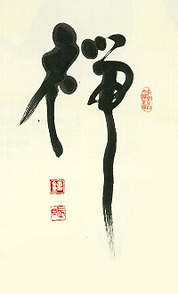

義助慰安婦 —— 李敖百件珍藏義賣藝術品（第98件） 品 名：I11. 劉辰旦贈李敖「禪」與「筆」（三件一組） 預估價：20 萬 成交價：20 萬 說 明： 一對萬寶隆紀念海明威特製鋼筆，限量發行，乃是與李敖一起坐牢的好朋友劉辰旦先生所贈。劉先生是書法家，「禪」字書法寫得真好。 
一對萬寶隆紀念海明威特製鋼筆，限量發行，乃是與李敖一起坐牢的好朋友劉辰旦先生所贈。劉先生是書法家，「禪」字書法寫得真好。